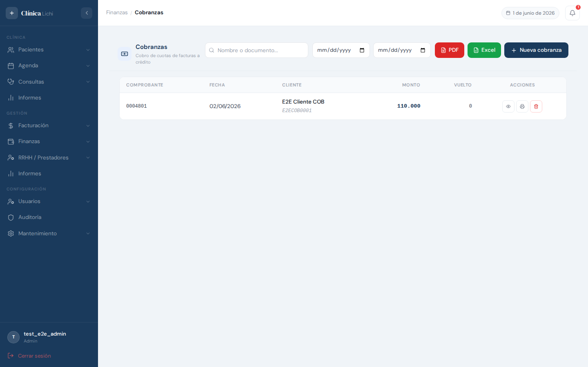
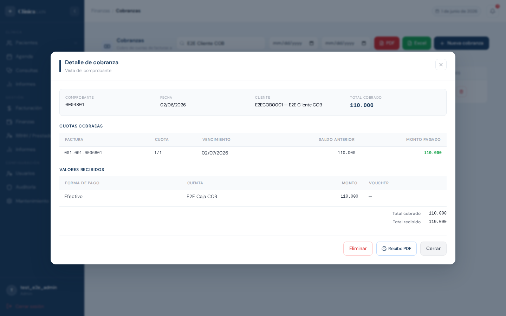
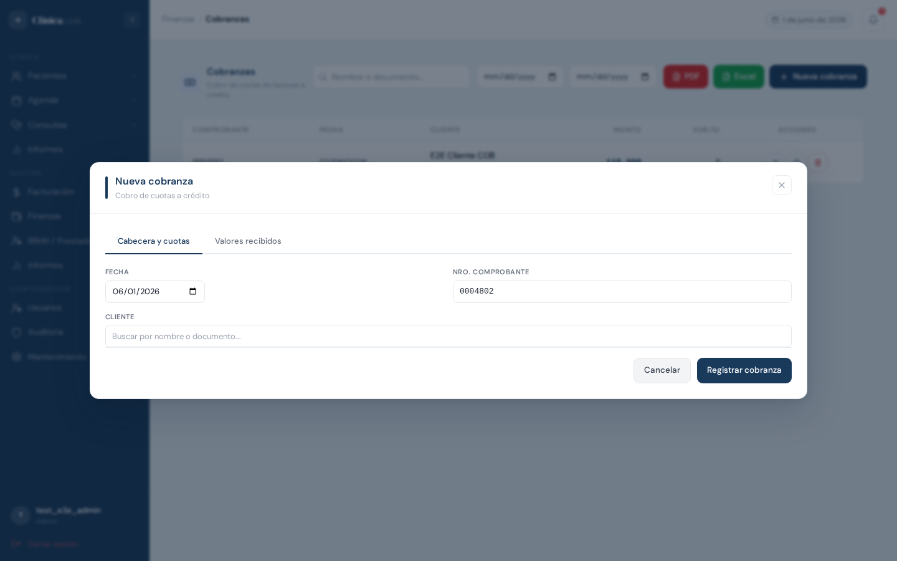
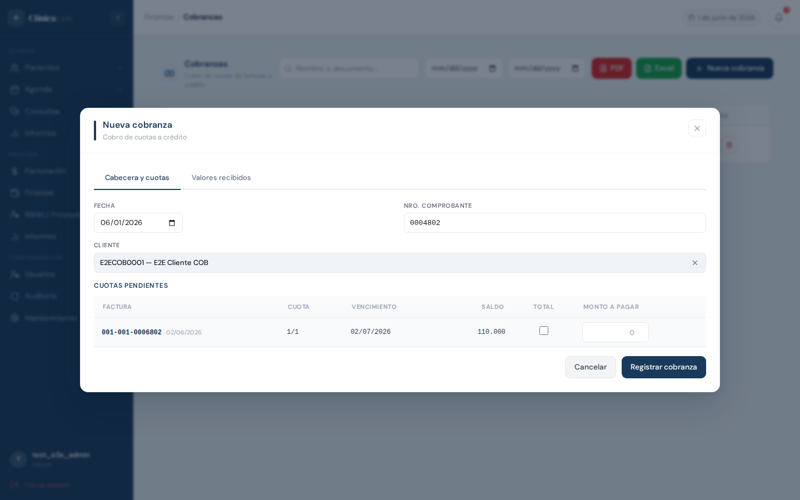
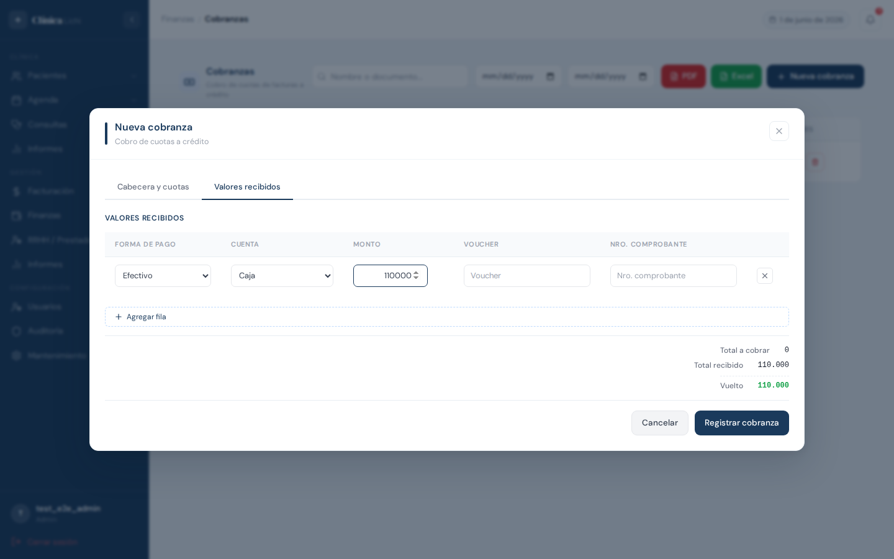
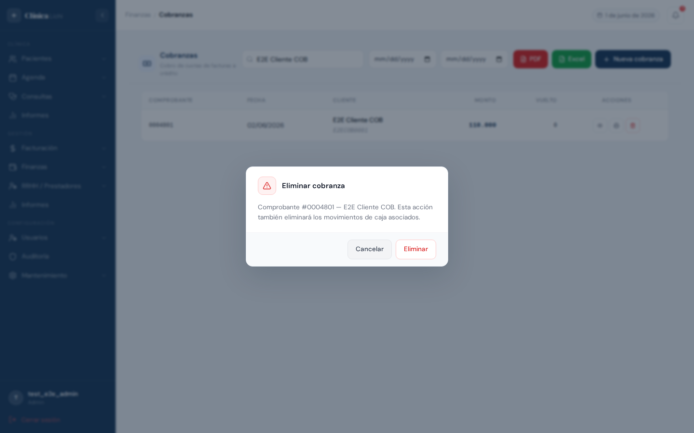

Descripción del módulo
El módulo de Cobranzas permite registrar el cobro de cuotas pendientes de facturas emitidas a crédito. Cada cobranza genera un recibo numerado correlativo, actualiza automáticamente el saldo de las cuotas cobradas y registra los movimientos en la cuenta de caja/banco correspondiente.
Una cobranza puede incluir el pago parcial o total de una o más cuotas del mismo cliente, con una o varias formas de pago. El sistema calcula el vuelto automáticamente cuando el monto recibido supera el total a cobrar.
Permisos por rol
| Acción | Administrador | Recepcionista | Médico | Secretaria médico |
|---|---|---|---|---|
| Ver listado y detalles | ✅ | ✅ | ✅ | ✅ |
| Registrar nueva cobranza | ✅ | ✅ | ❌ | ❌ |
| Eliminar cobranza | ✅ | ❌ | ❌ | ❌ |
| Ver listado de eliminados | ✅ | ❌ | ❌ | ❌ |
| Exportar PDF / Excel | ✅ | ✅ | ✅ | ✅ |
| Generar recibo PDF | ✅ | ✅ | ✅ | ✅ |
Acceder al módulo
El módulo de Cobranzas se encuentra en el menú lateral izquierdo, dentro del grupo Finanzas.
- Iniciar sesión con usuario y contraseña.
- En el menú lateral, hacer clic en Finanzas para desplegar el grupo.
- Seleccionar Cobranzas. La ruta en el navegador será
/finanzas/cobranzas.
Pantalla principal — listado
Al ingresar al módulo se muestra la lista de todas las cobranzas activas ordenadas por fecha descendente.

Barra de herramientas
| Elemento | Descripción |
|---|---|
| Buscador | Filtra por nombre o número de documento del cliente (debounce 300 ms). |
| Desde / Hasta | Filtros de fecha para acotar el período del listado. |
| Botón PDF (rojo) | Genera un PDF con el listado filtrado actualmente visible. |
| Botón Excel (verde) | Descarga un archivo .xlsx con el listado filtrado. |
| Botón Nueva cobranza | Abre el formulario de registro. Atajo: Insert. |
Columnas de la tabla
| Columna | Descripción |
|---|---|
| Comprobante | Número correlativo de 7 dígitos (ej. 0004801). |
| Fecha | Fecha de registro de la cobranza. |
| Cliente | Nombre del cliente con su número de documento como hint. |
| Monto | Total cobrado en guaraníes. |
| Vuelto | Diferencia cuando el monto recibido supera el cobrado (0 si no hubo vuelto). |
| Acciones | Botones: 👁 Ver detalle · 🖨 Recibo PDF · 🗑 Eliminar. |
Hacer clic en cualquier fila abre el modal de detalle de esa cobranza.
Buscar y filtrar cobranzas
Búsqueda por texto
El buscador filtra simultáneamente por nombre/razón social y número de documento del cliente. La búsqueda aplica con un retardo de 300 ms para evitar consultas innecesarias mientras se escribe.
Filtros de fecha
Los campos Desde y Hasta filtran por la fecha de la cobranza. Se pueden usar independientemente: solo "Desde", solo "Hasta", o ambos a la vez.
- Dejar ambos vacíos muestra todas las cobranzas sin restricción de fecha.
- Los filtros de fecha y el buscador de texto actúan en conjunto (AND).
Sin resultados
Si la combinación de filtros no devuelve registros, la tabla muestra el mensaje "Sin registros". Limpiar los campos restaura la lista completa.
Ver detalle de una cobranza

Hacer clic sobre cualquier fila de la tabla (o sobre el botón 👁 en la columna Acciones) abre el modal de detalle de la cobranza seleccionada.
Contenido del modal
| Sección | Datos mostrados |
|---|---|
| Cabecera | Nro. comprobante, fecha, cliente (documento + nombre), total cobrado. |
| Cuotas cobradas | Número de factura, cuota (ej. 1/3), fecha de vencimiento, saldo anterior y monto pagado. |
| Valores recibidos | Forma de pago, cuenta, monto y voucher (si aplica). Total cobrado, total recibido y vuelto. |
Botones del modal de detalle
- Eliminar — abre el diálogo de confirmación para eliminar la cobranza (solo administrador).
- Recibo PDF — genera y abre el recibo oficial de la cobranza en una nueva pestaña.
- Cerrar — cierra el modal sin realizar ninguna acción.
Registrar una nueva cobranza
El formulario de nueva cobranza se abre con el botón Nueva cobranza en la barra de herramientas, o presionando Insert. Está organizado en dos pestañas.

Tab 1 — Cabecera y cuotas

- Verificar o ajustar la Fecha de la cobranza (por defecto es el día de hoy).
- El Nro. comprobante se completa automáticamente con el siguiente número disponible. Se puede modificar manualmente; el sistema valida en tiempo real si el número ya está en uso.
- En el campo Cliente, escribir el nombre o documento para buscar. El buscador muestra solo los clientes con cuotas pendientes. Hacer clic en el nombre para seleccionarlo.
- Una vez seleccionado el cliente, aparece la tabla de Cuotas pendientes. Las cuotas vencidas se destacan en fondo rojo claro.
- Para cada cuota a cobrar, marcar la casilla "Total" (paga el saldo completo) o ingresar manualmente el Monto a pagar (pago parcial). El monto no puede superar el saldo de la cuota.
- El Total a cobrar se calcula y actualiza en tiempo real.
Tab 2 — Valores recibidos

- Seleccionar la Forma de pago (efectivo, tarjeta, transferencia, etc.).
- Seleccionar la Cuenta de caja/banco donde ingresa el dinero.
- Ingresar el Monto recibido para esa forma de pago.
- Si se usan varias formas de pago, hacer clic en + Agregar fila para añadir más valores.
- El sistema muestra el Total recibido, el Total a cobrar y el Vuelto calculado automáticamente. El total recibido debe ser igual o mayor al total a cobrar.
- Hacer clic en Registrar cobranza para guardar. El sistema registra la cobranza, actualiza el saldo de cada cuota y crea los movimientos de caja correspondientes.
Reglas de validación al guardar
- Debe seleccionarse un cliente.
- Debe incluirse al menos una cuota con monto mayor a cero.
- El monto a pagar de cada cuota no puede superar su saldo disponible.
- Debe ingresarse al menos un valor recibido completo (forma de pago + cuenta + monto).
- El total recibido no puede ser menor al total a cobrar.
- El número de comprobante no puede estar ya en uso.
Editar una cobranza
Eliminar una cobranza

La eliminación puede iniciarse desde dos lugares:
- El botón 🗑 en la fila de la tabla (columna Acciones).
- El botón Eliminar dentro del modal de detalle de la cobranza.
En ambos casos aparece un diálogo de confirmación que muestra el número de comprobante y el nombre del cliente. Hacer clic en Eliminar para confirmar, o en Cancelar para volver sin cambios.
Efecto de la eliminación
- La cobranza queda marcada como eliminada (borrado lógico, no se borra físicamente de la base de datos).
- El saldo de cada cuota cobrada en esa cobranza se restaura automáticamente al valor anterior.
- Los movimientos de caja/banco asociados también quedan marcados como eliminados.
- La cobranza desaparece del listado principal y ya no puede recuperarse desde la interfaz.
Exportar reportes (PDF y Excel)
Reporte PDF del listado
El botón rojo PDF en la barra de herramientas genera un PDF con todas las cobranzas que cumplen los filtros activos en ese momento (búsqueda de texto y/o rango de fechas). El archivo se abre directamente en el navegador.
Reporte Excel del listado
El botón verde Excel genera y descarga automáticamente un archivo .xlsx con las mismas filas que aparecen en la tabla filtrada, incluyendo: nro. comprobante, fecha, cliente, documento, monto y vuelto.
Recibo PDF individual
Cada cobranza tiene su propio recibo oficial. Se puede generar desde dos lugares:
- El ícono de impresora 🖨 en la fila de la tabla.
- El botón Recibo PDF dentro del modal de detalle de la cobranza.
El recibo incluye los datos del cliente, las cuotas cobradas con sus números de factura, y los valores recibidos.
Mensajes de error frecuentes
| Mensaje / Situación | Causa | Solución |
|---|---|---|
| "Seleccione un cliente." | Se intentó guardar sin elegir un cliente en el buscador. | Buscar y seleccionar el cliente con cuotas pendientes. |
| "Seleccione al menos una cuota con monto mayor a 0." | No hay cuotas marcadas con monto en el tab de cuotas. | Marcar la casilla "Total" o ingresar un monto en al menos una cuota. |
| "Supera el saldo (Gs. X)" | El monto ingresado manualmente supera el saldo disponible de la cuota. | Reducir el monto a pagar al valor indicado como saldo máximo. |
| "Ingrese al menos un valor recibido completo." | La fila de valores recibidos está incompleta (falta forma de pago, cuenta o monto). | Completar todos los campos de la fila de pago activa. |
| "Total recibido (Gs. X) menor al total a cobrar (Gs. Y)." | La suma de los montos en "Valores recibidos" es menor al total de cuotas seleccionadas. | Aumentar el monto en los valores recibidos hasta cubrir el total a cobrar. |
| "El número X ya está en uso." | El número de comprobante ingresado manualmente ya existe en el sistema. | Dejar el campo en blanco para que el sistema asigne el siguiente disponible, o ingresar un número libre. |
| El buscador de clientes no muestra resultados | El cliente no tiene facturas a crédito con saldo pendiente, o el término de búsqueda no coincide. | Verificar que existan facturas a crédito con cuotas impagas para ese cliente. Revisar la ortografía del nombre o usar el número de documento. |
| El recibo PDF no se abre | El navegador bloqueó la apertura de ventanas emergentes. | Permitir ventanas emergentes para este sitio en la configuración del navegador. |
| La cuota aparece en rojo en la tabla | La fecha de vencimiento de la cuota ya pasó (cuota vencida). | No es un error — es solo un indicador visual. La cuota puede cobrarse normalmente. |
Comportamientos esperados que no son errores
- Número de comprobante autocompletado: Al abrir el formulario, el campo "Nro. comprobante" se rellena automáticamente con el siguiente disponible. Es normal y puede modificarse.
- Cliente no aparece en el buscador: Si un cliente tiene todas sus cuotas saldadas o solo tiene facturas al contado, no aparece en el buscador de cobranzas. Esto es correcto.
- Vuelto en cero: Si el monto recibido es exactamente igual al cobrado, el campo "Vuelto" muestra 0. Es comportamiento esperado.
- Cuotas sin saldo no aparecen: Las cuotas ya pagadas en su totalidad no se muestran en el listado de cuotas pendientes al seleccionar un cliente.